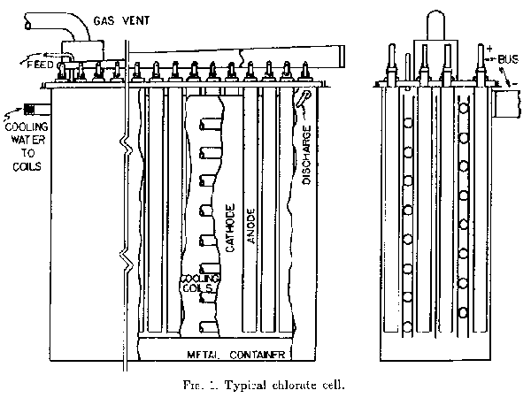

CHLORATES, ELECTROLYTIC PRODUCTION Sodium and potassium chlorate are produced commercially by electrolysis of aqueous solutions of the corresponding chlorides. Other chlorates, which have only limited commercial use, are made from sodium chlorate by metathesis. The sodium salt, NAClO3, is made in an electrolytic cell having no diaphragm and usually having anodes made from impregnated graphite. A few cells in this country now use lead dioxide anodes, while magnetite is also employed to some extent in European cells. Anodes may also be made of platinum or platinum-clad titanium. Mild steel is widely used for cathodes, although stainless steel and graphite are also employed. Steel, plastic, or concrete are used for cell bodies. Cell covers are plastic, asbestos-cement, or some other inert, nonconductive material.
snipThis reaction is favored at temperatures above 30C and at a pH below 7. Under alkaline conditions and temperatures below 30C the hypochlorate will remain unreacted. A typical chlorate cell is shown in Fig. 1.  Chlorate cells are operated at such a low temperature that not all of the heat produced can be carried off by evaporation of water from the electrolyte. Therefore, cooling coils are customarily employed. These coils are usually of steel, located within the cell, and are bonded to the cathode to provide protection against corrosion. External cooling of circulated electrolyte may also be used. Owing to the decrease of overvoltage at higher temperatures, and its effect on heat generation, the thermal conditions are inherently stable and cooling water may be controlled by a setting on a hand operated valve. The difference between the cell voltage and the theoretical decomposition voltage (2.3 volts) represents the heat which must be removed from the cell by cooling methods. Electrical supply and arrangement of chlorate cell systems are similar to those used in chlorine plants. Cells are usually connected in one or more electrical series operating at up to 600 volts, but the electrolyte and cooling water flows are in parallel. The cell covers are provided with a gas duct system to vent the byproduct gas. Cell gas, principally hydrogen contaminated with oxygen and chlorine to the degree that it is usually not recovered, is vented to the atmosphere. In some systems air is drawn in over the vapor space and mixed with the hydrogen to drop its concentration below the explosive limit. Cells may also be sealed and operated with a high hydrogen content in the vent gas. Some facilities employ cells having bipolar electrodes which are arranged to divide a long narrow cell container into a large number of parallel chambers, each being an individual cell. One side of each electrode is anodic with the opposite side being the cathode in the next chamber. Current is introduced into the first electrode of the battery and leaves from the last. This arrangement allows a very simple electrical bus system and a compact arrangement of the cells. No outstanding advantages can be attributed to any particular cell design. The operating success of a plant is usually a function of the chlorate plant in its entirety. Whereas past practices have involved cells containing a large volume of dead space to allow retention time for the conversion of hypochlorite to chlorate and various cascade systems to allow for liquor flow through groups of cells in series, present practice tends toward large cells having no dead space and simple parallel liquor flow through individual cells. Advantages of this trend arise from the greater electrolyzing capacity per unit area of floor space and from simplified operation of the cells. These changes in design have not resulted in any apparent loss in current efficiency. Chlorate cells are not particularly sensitive to variations in operating conditions and will produce satisfactorily within a wide range for each variable. Thus, it is customary for each facility to operate it's cells in such a manner as to obtain maximum fiscal economy, taking all plant expenses into consideration. Therefore, it is not possible to set forth exact operating data for chlorate cells and the following table merely contains a representative range of characteristics based on the use of graphite anodes. As in the case of chlorine cells, chlorate cells must be dismantled at the end of the useful life of the anodes for cleaning and anode replacement. The absence, of a diaphragm in the chlorate cell makes this repair relatively simple. It is customary to add several grams per liter of sodium chromate to the electrolyte to assist in maintaining pH on the acid side and to reduce corrosion effects on the metallic portions of the cell (not usable with lead dioxide anodes). In the event that either the cell container or the cooling coils are of metal, they are bonded to the cathode to provide cathodic protection against corrosion. Fig. 2 is a basic flowsheet for sodium chlorate production.
sniploss of chlorine from the electrolyte. Therefore, the stream being returned to the cells from the rundown tank is acidified with chlorine or hydrochloric acid using automatic control based on pH. The feed to the crystallization system contains hypochlorite ion which must be removed by heating, air blowing, and/or acid or thiosulfate treatment. The feed is also made slightly alkaline with caustic soda following hypochlorite removal. Failure to remove hypochlorite and acid will cause serious corrosion problems in the evaporator. The liquor is subsequently filtered to remove anode mud and other solids. If required by the concentration of chlorate, the purified liquor may then be evaporated in continuous, multi-effect evaporators until chlorate just starts to precipitate. The liquor is then transferred to either an evaporative or a surface cooled crystallizer where crystallisation takes place. In some systems "salting out" of chlorate with sodium chloride is employed. Crystallizers may operate at temperatures as low as -1OC. The slurry from the crystallizer is continuously centrifuged to remove chlorate crystals, with the mother liquor being returned to the rundown tank.
SNIPChlorates are reasonably stable but, since they are very powerful oxidizing agents, have a tendency to react strongly with reducing agents. Accordingly, great care must be taken that all equipment and plant facilities are kept clear of wood, oil, combustible organic materials, sulfur, ammonium salts, dust, and easily oxidizable metals such as aluminum and magnesium. Moving equipment must either be run dry or lubricated with water or fluorinated lubricants. Pump packings must be of the noncombustible type. Chlorate solutions are especially dangerous with respect to materials that are both absorbent and oxidizable. Rubber and plastics, although organic in nature, may be relatively safe for certain applications provided that they do not become impregnated with solution, that they do not exude organic materials such as oils and plasticizers, and that their temperature is kept well below the ignition point. Good safety practice requires that employees in chlorate facilities wear a complete change of clean clothing every day and that it be washed after each shift. Clothing should also be changed immediately in the event that it is splashed with chlorate solution since, when dry, chlorate-saturated fabric becomes violently combustible. Rubber shoes should also be worn since leather easily impregnates with chlorate solutions and becomes hazardous. Chlorate solution will easily creep into small cracks and other interstices in equipment and then form crystals. Upon crystallization, expansion occurs which may cause serious leaks. Chlorate solutions will also creep and deposit crystals in cell vents. Therefore, daily washdowns of plant facilities are advisable. Sodium chlorate is employed principally for pulp bleaching (reactant for chlorine dioxide generation), as a herbicide, and as an intermediate for the production of ammonium perchlorate, the oxidizer for most solid rocket propellants. Potassium chlorate is used in matches, flares, and pyrotechnic devices.
SNIP
| Chlorate Cell Characteristics | |
|---|---|
| Cell potential, volts | 3.0 - 4.0 |
| Cell current, amperes | 1,000 - 30,000 |
| Current density, amps/ft2 | 30 - 80 (?) |
| Current efficiency % | 60 - 70 |
| Power consumption, kwh/ton NaClO3 | 6,000 - 7,000 |
| NaClO3 in electrolite, g/l | 150 - 600 |
| NaCl in electrolite, g/l | 50 - 200 |
| Sodium chromate in electrolite, g/l | 1 - 7 |
| Temperature, C | 30 - 50 |
| pH | 6.0 - 7.0 |
| Graphite consumption, lbs/ton NaClO3 | 15 - 25 |
| Graphite consumption, g/Kg NaClO3 | 6.8 - 11.4 |
| Life of anodes, years | 1 - 3 |
| Anode-cathode spacing, inches | 0.3 - 0.5 |
1) White, N. C., Trans Electrochem SOC., 92, 15 - 21 (1947).
2) Janes, Milton, ibid., 23 - 44.
3) Hampel, Clifford A., and Leppa, P. W., ibid 55 - 65.
4) Mantell, C. L., "Industrial Electrochemistry," 4th Ed., 342 - 347, New York, McGraw-Hill Book Co Inc, 1960.
5) Kirk, R. E., and Othmer, K. F., Ed., "Encyclopedia of Chemical Technology." Vol. 3, 707 - 715, New York, The Interscience Encyclopedia, Inc., 1949.
*******************
HIT THE BACK BUTTON ON YOUR BROWSER